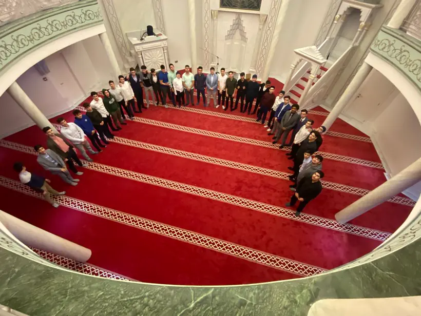

01
Cami hizmetleri
Günlük ibadet vakti, cuma ve bayram programları. Mahallemizden herkes kapımızdan içeri girebilir; sorularını çekinmeden sorabilir.
Cami, yurdun kalbidir. Talebeler burada cemaatle namaz kılar, mahalle sakinleriyle tanışır ve topluluğun bir parçası olur.